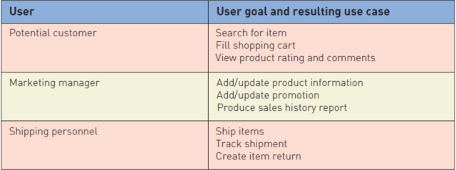
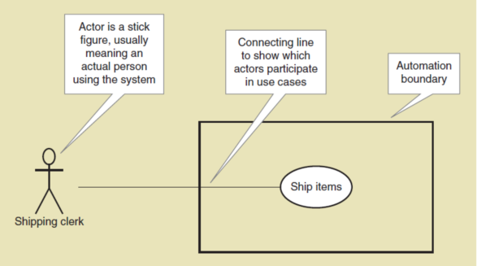
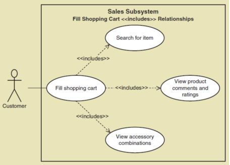

System Analysis and Design
To equip students with the fundamental knowledge in project planning, user requirements analysis and design of computer systems using object-oriented approaches

W E L C O M E
Use Cases and User Goals
What is Use Case?
- Use case— an activity that the system performs, usually in response to a request by a user
- Use cases define functional requirements
- Analysts decompose the system into a set of use cases (functional decomposition)
- Two techniques for Identifying use cases
- User goal technique
- Event decomposition technique
- Name each use case using Verb-Noun
User Goals Techniques
- Identify all the potential users for the new system
- Classify the potential users in terms of their functional role (e.g., shipping, marketing, sales)
- Further classify potential users by organizational level (e.g., operational, management, executive)
- For each type of user, interview them to find a list of specific goals they will have when using the new system (current goals and innovative functions to add value)
Some RMO CSMS Users and Goals
Events and Use Cases
Types of Events
External Event
- Occurs outside the system
- Usually initiated by an external agent or actor
Temporal Event
- Occurs as a result of reaching a point in time
State Event
- Occurs when something happens inside the system that triggers some process
- Example :reorder point is reached for inventory item
External and Temporal Events Checklist
| External Event Checklist |
|---|
|
| Temporal Event Checklist |
|---|
|
Use Case Diagrams
What is Use Case Diagram?
- Use case diagram— a UML model used to graphically show uses cases and their relationships to actors
- Recall UML is Unified Modeling Language, the standard for diagrams and terminology for developing information systems
- Actor is the UML name for a end user
- Automation boundary— the boundary between the computerized portion of the application and the users who operate the application
Use Case Diagrams Symbols
Use Case Diagrams : The include relationships
A relationship between use cases where one use case is stereotypically included within the other use case— like a called subroutine. Arrow points to subroutine
Steps to Draw Use Case Diagrams
- Identify all the stakeholders and users who would benefit by seeing a use case diagram
- Determine what each stakeholder or user needs to review in a use case diagram: each subsystem, for each type of user, for use cases that are of interest
- For each potential communication need, select the use cases and actors to show and draw the use case diagram. There are many software packages that can be used to draw use case diagrams
- Carefully name each use case diagram and then note how and when the diagram should be used to review use cases with stakeholders and users
Our Team
Nurul Murshida bt Omar Bakri
144184
“Live for each second without hesitation.” — Elton John
Nurul Adilah bt Mohd Asri
142083
“ You only live once, but if you do it right, once is enough.” — Mae West.
Farah Mursyidah bt Fuahaidi
144395
“Life is a succession of lessons which must be lived to be understood.” — Helen Keller
Nur Aisyah bt Ahmad Zaki
141870
“Life is really simple, but men insist on making it complicated.” — Confucius
Ainil Hawa binti Abdul Rozak
141928
“The healthiest response to life is joy.” — Deepak Chopra